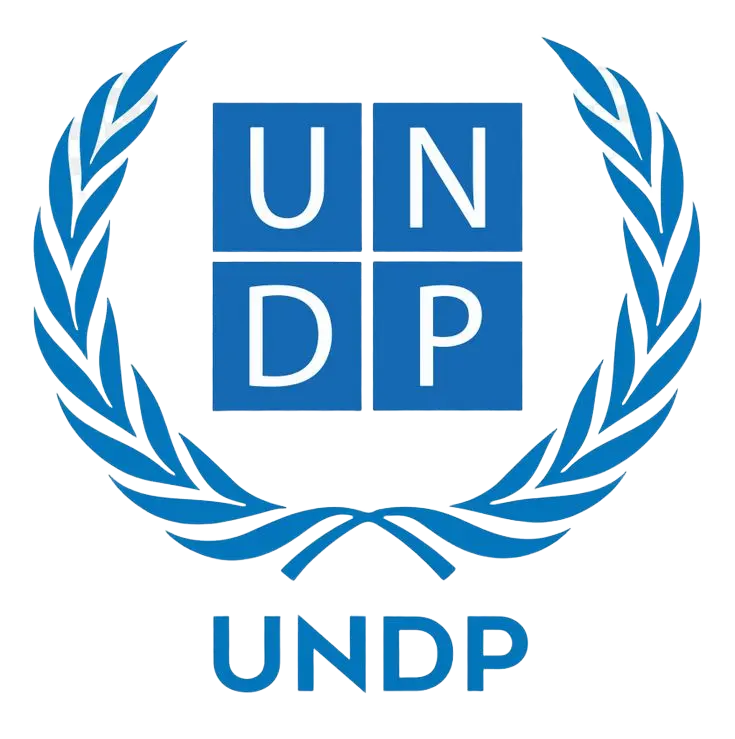
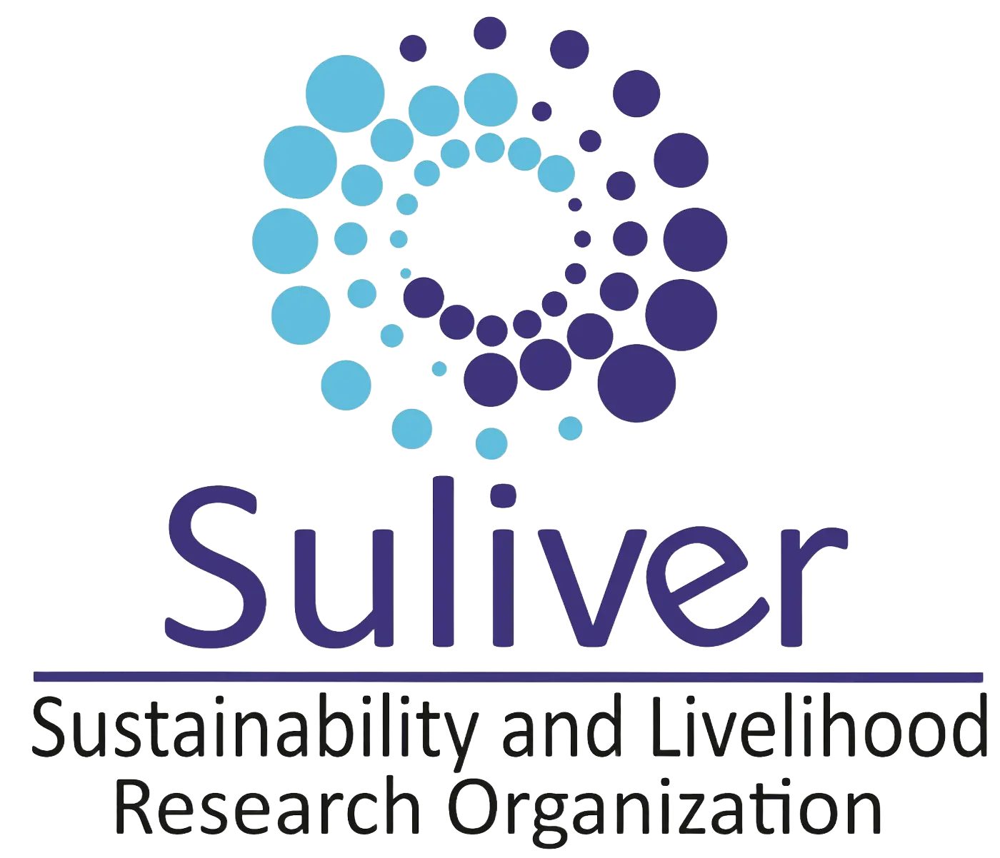

Engagements with UN agencies, governments and development partners
Policy design, research and institutional strengthening across national systems
Multi-country engagement across policy advisory, systems design, and development programming in 15+ countries
Areas of Engagement
Employment Policy & Labour Market Systems
Expertise in designing, reviewing and implementing national employment policies and labour market frameworks. Dr. Evoh served as lead consultant reviewing Nigeria’s National Employment Policy (NEP) of 2017, and has supported ILO Decent Work Country Programmes in Ghana and Sierra Leone. His work emphasizes aligning employment strategies with inclusive growth, skills development and international labour standards.
Core Focus Areas
- National employment policy design and review (e.g. Nigeria 2017 NEP)
- Labour market diagnostics and reform strategies
- Skills development systems and workforce integration
- Social dialogue and labour governance frameworks
- Decent work and productive job creation
Sustainable Livelihoods & Economic Resilience
Development of resilient livelihood systems and inclusive economic strategies. He led post-crisis socio-economic impact assessments – notably after the West African Ebola epidemic – and has designed rural and urban livelihood recovery frameworks. His focus is on income diversification, agricultural productivity, community-based enterprises and inclusive growth for vulnerable populations.
Core Focus Areas
- Livelihood diversification and income-generating systems
- Rural and urban livelihood development strategies
- Economic resilience and vulnerability reduction (e.g. post-Ebola recovery)
- Informal economy integration and productivity
- Community-based and inclusive growth frameworks
Institutional Reform & Policy Governance Systems
Strengthening policy and institutional capacity for effective implementation. He helps build robust governance and coordination mechanisms (e.g. multi-ministerial committees for labour policy), aligning labour market initiatives with national development plans. His work includes public sector reform, stakeholder mapping and establishment of regulatory and implementation frameworks to support sustainable employment and social protection systems.
Core Focus Areas
- Institutional capacity building and governance reform
- Policy coordination and inter-agency frameworks
- Public sector reform for labour and social protection
- Regulatory and implementation frameworks
- Multi-stakeholder consultation processes
Crisis Response, Recovery & Fragile-State Systems
Advisory and technical support in crisis and post-conflict contexts. He has guided recovery strategies in fragile environments – for example, leading socio-economic recovery planning after the Ebola outbreak – and contributed to post-conflict livelihood frameworks (e.g. in Libya). His focus is stabilizing labour markets, integrating humanitarian responses with development, and building resilient employment systems.
Core Focus Areas
- Post-crisis livelihood recovery strategies (Ebola, etc.)
- Employment systems in fragile/conflict-affected states
- Economic recovery and resilience frameworks
- Humanitarian–development transition strategies
- Local economic stabilization and planning
Migration, Displacement & Host-Community Economies
Policy analysis on migration, displacement and integration. He has examined labour mobility and refugee inclusion in host-country economies. For instance, he advised on migrant labour market integration and host-community livelihood programs in West Africa and the Middle East. His work addresses cross-border labour systems, remittance economies and social cohesion in migration contexts.
Core Focus Areas
- Migration policy and labour mobility systems
- Refugee and migrant livelihoods in host communities
- Displacement economics and labour market access
- Cross-border labour and remittance frameworks
- Social cohesion and economic inclusion
Applied Policy Research, Diagnostics & Knowledge Systems
Design and implementation of evidence-based research to inform policy. He has authored national employment diagnostics and labour market studies (e.g. ILO employment surveys) and contributed to global policy reports. Notably, Dr. Evoh was a contributing expert for the UN Global Sustainable Development Report 2019. His work bridges research and practice through data-driven policy design, impact analysis, and knowledge-system development.
Core Focus Areas
- Labour market diagnostics and policy analytics
- Comparative policy research and multi-country studies
- Evidence-based employment policy design and evaluation
- Socioeconomic impact analysis and modelling
- Knowledge management and policy research frameworks